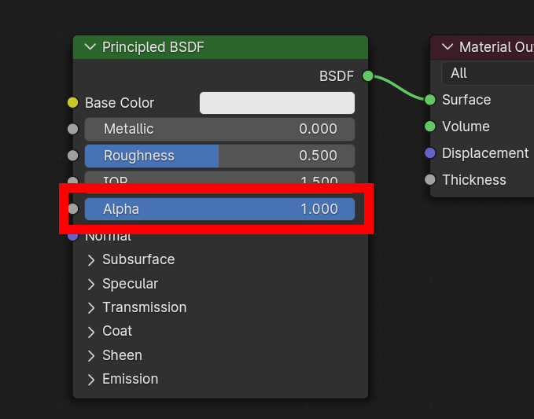
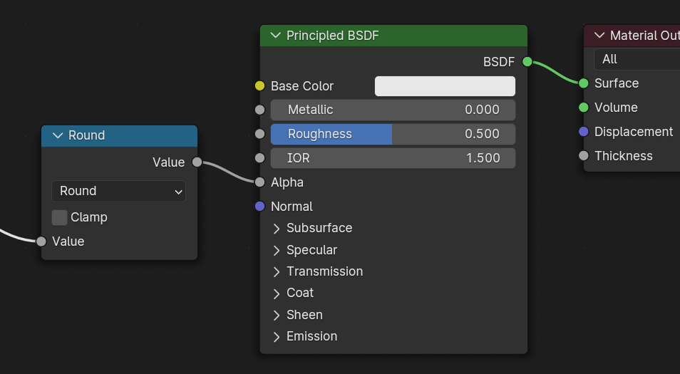

glTF 2.0¶
参考
- 类别:
导入 - 导出
- 菜单:
启用插件¶
这个插件是默认开启的，如果尚未开启：
用法¶
glTF™（GL Transmission Format / GL传输格式）用于在 Web 和本机应用程序中传输和加载 3D 模型。glTF 减小了 3D 模型的大小以及解压缩和渲染这些模型所需的运行时处理。此格式通常用于网页上，并支持各种 3D 引擎，如 Unity3D、虚幻引擎 4 和 Godot 。
此导入器/导出器支持以下 glTF 2.0 功能：
网格
材质（原理化 BSDF）和无阴影（无光照）
纹理
摄像机
精确光源（点光、聚光和定向光源）
延伸部分（列在下面）
附加的（自定义属性）
动画（关键帧、形态键及蒙皮）
网格¶
glTF 的内部结构模拟了图形芯片在实时渲染时常用的内存缓冲区，这样资产可以交付到桌面、网页或移动终端，并以最少的处理进行迅速显示。因此，当导出为 glTF 时，四边形和多边形会自动转换为三角形。与 Blender 相比，不连续的 UV 和平直着色的边可能导致 glTF 中的顶点数适度增多，因为这样的顶点会被分开以导出。同样，曲线和其他非网格数据不会保留，必须在导出之前转换为网格。
GPU 实例¶
在导出程序中启用该选项后，将使用 EXT_mesh_gpu_instancing 扩展导出实例。导出时有一些限制：
实例必须是网格，并且不带有任何子项
实例必须全部是相同物体的子级。
这个扩展并不管理材质变体。这意味着生成的文件将包含所有带有相同材质的实例。
检测到的实例为共享相同的网格数据的物体。
导入期间，实例是由共享数据网格的物体创建的。
材质¶
glTF 中的核心材质系统通过以下信息通道支持金属度/粗糙度 PBR 工作流：
基础色
金属度
粗糙度
烘焙的环境光遮蔽
法线图（切线空间，+Y 向上）
自发光
一些额外的材质属性或材质类型可以用 glTF 扩展来表达。完整的内容可以在本文档的扩展部分找到。

导入的材质¶
glTF 材质系统与 Blender 自己的材质不同。导入 glTF 文件时，此插件将构造一组 Blender 节点，以尽可能接近地复制每个 glTF 材质。
导入器支持金属度/粗糙度 PBR（核心 glTF）、高光/光泽 PBR（KHR_materials_pbrSpecularGlossiness）以及一些扩展材质类型。完整列表可在此文档的扩展部分找到。
Tip
检查材质导入过程的结果，是查看可以导出到 glTF 的材质节点和设置类型的示例的好方法。
导出的材质¶
这个导出器支持金属/粗糙PBR（核心 glTF）和无阴影（KHR_materials_unlit）材质。它将基于它在 Blender 材质中识别的节点构建 glTF 材质。材质导出过程处理如下描述的设置。
Note
当材质中使用图像纹理时，glTF 要求格式图像为 PNG 或 JPEG。此插件将自动转换其他格式的图像，从而增加导出时间。
基础色¶
通过在原理化 BSDF 节点上查找基础色输入来确定 glTF 基础色。如果输入未连接，则输入的默认颜色（未连接插口旁边的颜色字段）将用作 glTF 材质的基础色。
可以在节点上直接指定纯色基础色。¶
如果发现图像纹理节点连接到基色输入，则该图像将用作 glTF 基础色。
图像用作 glTF 基础色。¶
金属度与粗糙度¶
这些值从原理化 BSDF 节点读取。如果这两个输入都未连接，节点将显示滑块以控制它们各自的值在 0.0 和 1.0 之间，并且这些值将被复制到 glTF 中。
当使用图像时，glTF 期望金属度的值在蓝色 (B) 通道中编码，粗糙度在同一图像的绿色 (G) 通道中编码。如果图像以不遵循此约定的方式连接到 Blender 节点，则插件可能会尝试在导出期间使图像适应正确的形式（导出时间会增加）。
在 Blender 节点树中，建议使用单独的 RGB 节点将通道与图像纹理节点分开，并将绿色 (G) 通道连接到粗糙度，将蓝色 (B) 通道连接到金属度。glTF 导出器会将此排列识别为与 glTF 标准匹配，这将允许它在导出期间把图像纹理简单地复制到 glTF 文件中。
此图像纹理节点应将其 色彩空间 设置为非颜色。
金属度/粗糙度图像以与 glTF 标准一致的方式连接，允许在导出的 glTF 文件中逐字使用。¶
烘焙的环境光遮蔽¶
glTF 能够存储一个烘焙的环境光遮蔽贴图。目前，还没有任何节点安排可以让 Blender 以与 glTF 完全相同的方式使用这种贴图。但是，如果导出器找到一个名为 glTF Material Output 的自定义节点组，并在该节点组上找到一个名为 Occlusion 的输入，它就会寻找一个附着在那里的图像纹理，作为 glTF 中的遮蔽贴图。这个效果不需要在 Blender 中显示，因为 Blender 有其他显示环境遮蔽的方法，但这个方法将允许导出器将遮蔽图像写入 glTF。这对于实时的 glTF 查看器来说是很有用的，特别是在那些在渲染时可能没有多余的能力来计算这些东西的平台。
预先烘焙的环境光遮蔽贴图，连接到一个不渲染但将导出到 glTF 的节点。¶
Tip
如果您在偏好设置中启用了“着色器编辑器插件”，即可在此菜单中启用自定义节点组：添加 > 输出 > glTF 材质输出

glTF 将遮蔽贴图存储在红色 (R) 通道中，允许它选择与粗糙度和金属度通道共享同一图像。
这种节点组合模仿了 glTF 将遮蔽、粗糙度和金属度打包成单个图像的方式。¶
Tip
Cycles 渲染引擎有一个烘焙面板，可以用来烘焙环境遮蔽贴图。产生的图像可以被保存并直接连接到 glTF Material Output 节点。
法线贴图¶
要在 glTF 中使用法线贴图，请将图像纹理节点的颜色输出连接到法线贴图节点的颜色输入，然后将法线贴图法线输出连接到原理化 BSDF 节点的法向输入。此图像纹理节点应将其 色彩空间 属性设置为非色彩。
法线贴图节点必须保留其切线空间的默认属性，因为这是 glTF 当前支持的唯一类型的法线贴图。可以在此节点上调整法线贴图的强度。导出器不直接导出这些节点，但会使用它们来定位正确的图像，并将强度设置复制到 glTF 中。

导出器会找到连接的法线贴图并将其复制到 glTF 文件。¶
Tip
Cycles 渲染引擎有一个烘焙面板，可用于从几乎任何其他法向量节点排列中烘焙切线空间法线贴图。将烘焙类型切换为法向。将此烘焙面板用于 glTF 时，请保留默认空间设置（空间：切向，R: +X, G: +Y, B: +Z）。如上所述，可以保存生成的烘焙图像，并将其用于使用上述法线贴图节点的新材质，从而使其可以正确导出。
参见：Cycles 渲染烘焙
自发光¶
一个图像纹理节点可以连接到原理化 BSDF 节点上的自发光输入，以作为 glTF 材质的自发光贴图。或者，图像纹理节点可以连接到一个自发光着色器节点，并通过相加着色器节点与原理化 BSDF 节点的属性相结合。
如果自发光贴图在材质中是单独存在的，最好将基础色默认设置为黑色，粗糙度默认设置为 1.0。如果不需要其他通道，这样可以将它们的影响降到最低。

支持这种安排是为了向后兼容。直接使用原理化 BSDF 节点是比较简单的。¶
如果任何部分的自发光强度大于 1.0，KHR_materials_emissive_strength 扩展将被使用。
清漆¶
当原理化 BSDF 节点上的 清漆 输入有一个非零的默认值或连接图像纹理节点时，KHR_materials_clearcoat glTF 扩展将被包含在输出中。这个扩展也将包括 清漆粗糙度 输入的值或图像纹理（如果有）。
如果使用图像纹理，glTF 要求将清漆值写入红色（R）通道，而 清漆粗糙度 写入绿色（G）通道。如果连接的是单色图像，导出器会将它们重新映射到这些颜色通道。
清漆法线 输入接受与基础法线输入相同的输入，特别是一个带有 +Y 向上的切线空间法线贴图，以及一个用户定义的强度。这个输入可以重复使用基础材质正在使用的法线贴图，也可以分配它自己的法线贴图，或者可以不连接以获得光滑的涂层。
所有用于清漆着色的图像纹理节点都应将其 色彩空间 设置为非色彩。

一个复杂的清漆应用的例子，可以正确地输出到 glTF。仅仅通过原理化 BSDF 节点就可以应用更简单、更平滑的涂层。¶
光泽¶
如果使用光泽粗糙度纹理，glTF 要求将这些值写入 alpha (A) 通道。
Tip
丝绒 BSDF 节点只在 Cycles 渲染引擎上可用。你可能要临时切换到 Cycles 来添加这个节点，然后再回到 EEVEE。
高光¶
当原理化 BSDF 的 折射率等级 或 高光染色 输入不是默认值，或者已连接了图像纹理，KHR_materials_specular glTF 扩展将被包含在输出中。
各向异性¶
各向异性纹理和数据需要在导出和导入时进行转换。
在导入时，会创建一些节点来管理这种转换
在导出时，会检测到完全相同的节点，并利用这些节点导出数据。
在导出时，您还可以为 各向异性 和 各向异性旋转 插槽接入一些灰度纹理。然后，输出程序会将这些纹理转换为兼容 glTF 的纹理。
请注意，切向 接口必须连接到包含 UV 贴图的 切向 节点。所选 UV 贴图必须是法线贴图对应的 UV 贴图。
透射¶
当原理化 BSDF 节点上的透射输入有一个非零的默认值或连接了图像纹理节点时，KHR_materials_transmission glTF 扩展将被包含在导出中。当使用纹理时，glTF 将数值存储在红色（R）通道中。色彩空间 应该被设置为非色彩。
透射与 Alpha 混合不同，因为透射允许全强度的高光反射。在 glTF 中，alpha 混合的目的是表示在指定的几何体中部分缺失的物理材料，比如医用纱布包。透射的目的是代表实体的物理材料，但允许非高光反射的光线透过材料，比如玻璃。
Tip
材质的基础粗糙度可以用来模糊化透射，如同磨砂玻璃。
Tip
通常情况下，透射型材质的 alpha 混合模式应该保持为 “不透明”，也就是默认设置，除非该材质只是部分覆盖指定的几何体。
Note
在支持透射的实时引擎中，引擎中的各种技术限制可能会决定场景的哪些部分可以通过透射表面看到。特别是，透射性材料在其他透射性材料后面可能不可见。这些限制会影响基于物理的透射，但不会影响 alpha 混合的非透射材料。
Note
如果您想对您的模型启用折射，除了 KHR_materials_volume，还必须使用 KHR_materials_transmission。参见本文档中专门的 体积 部分。
Warning
对于实时渲染引擎来说，传输的实现很复杂，而且对 KHR_materials_transmission glTF 扩展的支持还不普遍。
IOR¶
导入时，有两种不同的情况：
如果没有设置
KHR_materials_ior，原理化 BSDF 节点的 IOR 值被设置为 1.5，这是 glTF 的默认 IOR 值。如果设置，
KHR_materials_ior用于设置原理性 BSDF 的 IOR 值。
在导出时，只有当这些扩展之一也被使用时，IOR 才会被包括在导出中：
KHR_materials_transmissionKHR_materials_volumeKHR_materials_specular
1.5 的 IOR 不包括在输出中，因为这是默认的 glTF IOR 值。
体积/音量¶
体积可以通过使用体积吸收节点导出，与输出节点的体积接口相连接。数据将使用 KHR_materials_volume 扩展来导出。
为了导出体积，必须在原理化 BSDF 节点上设置 透射。
体积吸收节点的颜色被用作 glTF 的衰减颜色。此属性不允许使用纹理。
体积吸收节点的密度被用来作为 glTF 衰减距离的倒数。
厚度可插入自定义节点组
glTF Material Output的 Thickness 接口。如果纹理用于厚度，它必须接在图像的绿（
G）通道上。
glTF 变体¶
Note
要获得完整的变体体验，您必须在插件首选项中启用用户界面

在 Blender 中有两个位置可以管理 glTF 变体
在3D视图中，在
glTF变体选项卡上有关高级设置，请参阅网格材质属性（请参阅高级 glTF 变体检查）
要理解使用变体的主要概念是，每个材质槽将被用作 glTF 基元的等效物。
glTF 变体切换¶
导入包含 KHR_materials_variants 扩展名的 glTF 文件后，可以显示所有变体。

您可以通过 选择 要显示的变体，然后单击 显示变体 来切换变体。
您可以通过单击 重置为默认 切换到默认材质（当没有使用变体时）。
glTF 变体创建¶
你可以点击变体菜单右侧的 + 号来添加一个新的变体。然后你可以双击来改名。
更改材质槽中的材质后，您可以使用 分配到变体 将当前材质分配到活动变体。
您还可以使用 分配为原始 设置默认材质。这些材质将在 glTF 中导出为默认材质。这是任何不管理 KHR_materials_variants 扩展的查看者将显示的材质。
高级 glTF 变体检查¶
如果要按基元检查基元，使用什么变体，可以转到网格材质属性。

glTF 材质变体 标签指的是活动材质槽和该槽使用的材质。你可以看到在给定的槽/基元中使用该材质的所有变体。
你也可以从这个选项卡中为变体指定材质，但建议从3D视图选项卡中执行。
双面/背面剔除¶
对于只能看到正面的材质，在 EEVEE 材质的 设置 面板中打开 背面剔除。使用其他引擎（Cycles、Workbench）时，您可以暂时切换到 EEVEE 以配置此设置，然后切换回来。
对于双面材质，请不要勾选此框。
此设置反转控制 glTF Double Sided 标志。¶
Alpha 模式¶
glTF 有三种 alpha 模式，取决于 alpha 值是始终为 1、始终为 0 或 1，还是可以介于 0 和 1 之间。输出程序会根据连接到 Alpha 接口的节点自动确定 alpha 模式。
- 不透明
在 不透明模式 下，材质 alpha 值始终为 1 。
 - 遮罩
在 遮罩模式 下，材质的透明度始终为 0 或 1。这会产生 “剪裁” 透明效果，即在不透明和透明区域之间形成硬边界，可用于树叶或有洞的布料等物体。要启用此模式，请使用数学运算节点将透明度值四舍五入为 0 或 1。
 四舍五入会将大于或等于 0.5 的透明度值上调到 1，而将小于 0.5 的值下调到 0 。也可以使用不同于 0.5 的截止值，通过数学运算节点执行
1 - (alpha < cutoff)来实现。遮罩模式与 EEVEE 的 “Alpha 钳制” 混合模式完全相同，但由着色器产生，因此可在其他渲染引擎中工作。
- 混合
不使用这些模式的材质将使用 混合模式。混合模式允许部分透明的表面为其后看到的物体着色，就像彩色薄膜的层叠效果。然而，部分透明度的渲染较为复杂，在使用混合模式的复杂场景中，glTF 查看器可能会出现视觉伪影。
为避免出现伪影，建议将模型中可以使用不透明或遮罩模式的部分分离，仅在必要部分使用混合模式，或者在不透明物体前仅使用 单层 透明多边形。
UV 映射¶
通过将 UV 贴图节点和映射节点连接到任何图像纹理节点，可以控制 UV 贴图的选择和变换。
映射节点中的设置使用名为 KHR_texture_transform 的 glTF 扩展导出。顶部有一个映射类型选择器。推荐使用 点 导出。也支持 纹理 和 矢量。支持的偏移量是：
位置 - X 和 Y
旋转 - 仅限 Z
缩放 - X 和 Y
对于 纹理 类型，缩放 X 和 Y 必须相等（均匀缩放）。

刻意选择的 UV 贴图。¶
Tip
这些节点是可选的。并非所有 glTF 阅读器都支持多个 UV 贴图或纹理变换。
系数¶
任何图像纹理节点可以选择性地乘以恒定颜色或标量。它们将被写为 glTF 文件中的系数，这些数字将与指定的图像纹理相乘。这并不常见。
对标量系数使用数学运算节点（乘法）。使用第二个值作为系数
使用混合节点（颜色/乘法）来设置颜色系数。将系数设为 1，并使用颜色 2（B）作为因子

例子¶
如果需要，单一材质可以同时使用所有上述节点。此图显示了一次性应用上述多个选项时的典型节点结构：

具有自发光纹理的原理化 BSDF 材质。¶
UDIM¶
UDIM 是一种在单个图像文件中存储多个纹理的方法。Blender 支持 UDIM 系统，但 glTF 不支持。在导出使用 UDIM 的模型时，插件会自动将图像分割成多个，每个贴图对应一个，并更新材质节点以使用新图像。所有 UDIM 纹理必须使用相同的 UV 贴图才能导出。
导出无阴影（不发光）材质¶
要导出无光材质，用摄像机射线混合，并避免使用原理化 BSDF 节点。

导出 KHR_materials_unlit 并在 Blender 中呈现无光影的几个类似节点布置之一。¶
扩展¶
使用 glTF 扩展可以使用附加信息扩展核心 glTF 2.0 格式。这允许文件格式保存在最初发布时非通用的细节。并非所有的 glTF 阅读器都支持所有扩展，但有些是相当常见的。
某些 Blender 功能只能通过这些扩展导出为 glTF。此插件直接支持 glTF 2.0 扩展：
导入
KHR_materials_pbrSpecularGlossinessKHR_materials_clearcoatKHR_materials_transmissionKHR_materials_unlitKHR_materials_emissive_strengthKHR_materials_volumeKHR_materials_sheenKHR_materials_specularKHR_materials_anisotropyKHR_materials_iorKHR_materials_variantsKHR_lights_punctualKHR_texture_transformKHR_mesh_quantizationEXT_mesh_gpu_instancing
导出
KHR_draco_mesh_compressionKHR_lights_punctualKHR_materials_clearcoatKHR_materials_transmissionKHR_materials_unlitKHR_materials_emissive_strengthKHR_materials_volumeKHR_materials_sheenKHR_materials_specularKHR_materials_anisotropyKHR_materials_iorKHR_materials_variantsKHR_texture_transformEXT_mesh_gpu_instancing
第三方 glTF 扩展¶
Python 开发者有可能通过编写自己的第三方插件来增加 Blender 对其他 glTF 扩展的支持，而不需要修改这个 glTF 插件。更多信息请看 GitHub 上的例子，如果需要，请注册一个扩展前缀。
自定义属性¶
自定义属性总是被导入的，如果在导出前选择了 选项，就会从大多数对象中导出。这些属性存储在 glTF 文件中相应对象的 extras 字段中。
与 glTF 扩展不同，自定义属性（额外项）没有定义命名空间，可以用于任何用户特定或应用程序特定的目的。
动画¶
glTF 动画会更改对象或姿态骨骼的变换或形态键的值。一个动画可以影响多个对象，并且在 glTF 文件中可以有多个动画。
导入¶
已设置导入的模型，以使文件中的第一个动画自动播放。擦拭时间线以观看其播放。
当文件包含多个动画时，其余的将使用非线性动画编辑器来组织。每个动画都会变成一个动作藏在一个 NLA 轨道上。轨道的名称是 glTF 动画的名称。要使该轨道内的动画可见，点击你想播放的轨道旁边的 Solo（星形图标）。

如果一个动画影响到多个对象，它将被分解成多个部分。影响一个对象的动画部分会变成一个动作，藏在那个对象上。使用轨道名称来分辨哪些动作是同一个动画的一部分。要播放整个动画，你需要为其所有轨道启用 Solo（星形图标）。
如果动画影响多个对象，则每个动画都将作为单个动作导入，并带有多个槽。这些槽可用于TRS、形状键或其他应用场景...
您可以在动画章节中找到有关动作槽的更多信息。
Note
目前没有办法看到一个有动画的模型的非动画姿态。
您可以使用动画切选器，位于动画摄影表编辑器。
Note
您必须启用插件设置中的 UI 选项才能看到动画切选器

你可以切换所有导入的动画。它自动为所有需要的轨道启用“孤立”（星号图标）。它也将未编辑动画的物体恢复到绑定时的状态。
导出¶
你可以通过很多方法来导出动画。glTF 动画如何从动作/NLA 中产生，是由 导出选项控制的。
动作（默认）¶
如果一个动作是一个对象上的活动动作，或者它被储存在一个 NLA 轨道上（例如，使用动作编辑器中的 存放 或 下推 按钮），它将被导出。没有 以这些方式之一与一个对象关联的动作是 不 被导出的。如果你有多个你想导出的动作，请确保它们被藏起来了！
一个 glTF 动画可以有一个名字，默认是动作名称。你可以通过将其 NLA 轨道从 NLATrack/[Action Stash] 重命名为你想使用的名称来覆盖它。例如，示例图 狐狸模型 将导出三个动画，“观望”、“行走” 和 “跑”。如果你把两个不同对象上的两个轨道重命名为同一个名字，它们将成为同一个 glTF 动画的一部分，并一起播放。
导入器会组织动作，以便它们在这种模式下被正确导出。
这个模式在你为游戏引擎导出时很有效，带有角色动画库。每个动作必须在其所在的非线性动画轨道上。
在 Blender 4.4 之前，轨道根据名称被合并。随着 Blender 4.4 和动作槽的引入，这种默认行为已经改变。现在，轨道是通过它们正在使用的动作而不是它们的名称合并。您可以在 动画 中找到有关动作槽的更多信息。
合并的活动动作¶
在这种模式下，不使用 NLA 组织，只使用所有对象上的活动动作导出一个动画。
NLA 轨道¶
在这个模式下，每个非线性动画轨道将分别以单独的 glTF 动画导出。这个模式在您使用片段修改器或您在同一轨道获取多重动作时尤为有用。
如果您将两个不同对象上的两条轨道重命名为相同的名称，它们会变成同一 glTF 动画的一部分，并一同播放。
场景¶
使用场景选项，动画可以按照您在视口中见到的那样导出。您可以选择导出一个单独的 glTF 动画，或者将每个对象分离。
Note
请记住仅支持某些类型的动画：
对象变换（位置、旋转、缩放）
姿态骨骼
形态键值
其他属性的动画，如物理、灯光或材质，将被忽略。
Note
为了采样由驱动器使用骨骼变换控制的形态键动画，它们必须位于作为骨骼骨架直接子级的网格对象上。
文件格式变体¶
glTF 规范确定了数据存储的不同方式。导入器可处理所有存储方式。导出器将要求用户选择以下几种形式之一：
glTF 二进制（.glb）¶
这将生成一个 .glb 文件，其中所有网格数据、图像纹理和相关信息都打包到一个二进制文件中。
Tip
使用单个文件可以轻松地将模型共享或复制到其他系统和服务。
glTF 分离式（.gltf + .bin + textures）¶
这将生成一个基于 JSON 文本的描述整体结构的 .gltf 文件，一个包含网格和矢量数据的 .bin 文件，以及引用在 .gltf 文件中的多个可选的 .png 或 .jpg 文件。
Tip
拥有各种单独的文件使用户在导出完成后，返回与编辑任何 JSON 或图像变得更加容易。
Note
请注意，共享此格式是需要将所有这些单独的文件作为一个群组共享。
glTF 嵌入式（.gltf）¶
这将生成一个基于 JSON 文本的 .gltf 文件，其中所有网格数据和图像数据都在文件中进行编码（使用 Base64）。如果资产必须通过纯文本连接共享，则此格式很有用。
Warning
这是可用方式中的最低效的，只应在必要时使用。仅当您在插件偏好设置中启用后才可用。
属性¶
导入¶
- 合并顶点
glTF 格式要求将不连续法向、UV 以及其他顶点属性存储为单独的顶点，这是在典型图形硬件上渲染所需的。此选项将尽可能合并同一位置的顶点。当前无法合并具有不同法向的顶点。
- 着色
如何在导入期间计算法线。
- 光照模式
可选择向后兼容非标准渲染引擎。适用于灯光。标准：基于物理的 glTF 灯光单位（cd、lx、nt）。无单位：非物理、无单位的光照。在没有曝光控制时非常有用。Raw（已弃用）：未经转换的 Blender 灯光强度
纹理¶
- 打包图像
打包所有图像到 blend 文件中。
- 导入 WebP 纹理
如果存在 WebP 格式的纹理，则加载 WebP 纹理，而不是后备的 png/jpg 纹理。
骨骼与蒙皮¶
- 骨骼方向
更改导入器使用的启发式算法来决定放置骨骼尖端的位置。请注意，Fortune 设置可能会在采用非均匀缩放的模式中使用不准确。否则这完全是美学方式的。默认值不会改变轴向，最适合从 Blender 重新导出。此默认选项将更改显示模式（添加形状并更改关系线），以获得更好的视图显示，即使原始骨骼轴向在美学方式上不是最准确的
- 猜测原始绑定姿态
确定编辑模式下骨骼（以及蒙皮网格）的姿态。打开时，尝试猜测用于计算反向绑定矩阵的姿态。
- 禁用骨骼形状
不在 3D 视图中显示骨骼形状。
- 骨骼形状缩放
3D 视图中骨骼形状的缩放。
管线¶
- 选择导入的物体
在导入后选中创建的物体。
- 导入场景附加内容
导入 glTF 附加信息作为自定义属性。在场景层级。
导出¶
- 格式
参见：文件格式变体。
- 保留原有
仅适用于 glTF 分离式文件格式。尽可能保留原始材质。警告：如果您使用一个以上的材质，根据 PBR 标准仅需要一个，则只有一个材质会被使用。这可能导致意外结果。
- 纹理
仅针对 glTF 分离文件格式。纹理文件放置于此文件夹，相对于 gltf 文件位置。
- 版权
该模型的法律权利和条件。
- 记住导出设置
将导出设置存储在 blend 文件中，以便下次打开文件时调用它们。
包括¶
- 选定的物体
仅导出选定的物体。
- 可见物体
仅导出可见的物体。
- 可渲染物体
仅导出可渲染的物体。
- 活动集合
仅导出活动集合中的物体。
- 包括嵌套集合
仅当活动集合打开时，在嵌套的活动集合上递归导出物体。
- 活动场景
仅导出活动场景。
- 自定义属性
将自定义属性导出为 glTF 附加信息。
- 摄像机
导出摄像机。
- 精确灯光
导出定向光、点光和聚光。使用
KHR_lights_punctualglTF 扩展。
变换¶
- Y 向上
使用 glTF 标准导出，+Y 向上。
数据 - 场景结构¶
- 几何节点实例
导出几何节点实例。此特性是试验性的。
- GPU 实例
使用
EXT_mesh_gpu_instancing扩展导出。- 展平物体层级
在 TRS 矩阵不可分解的情况下很有用。只有蒙皮网格将保持为骨架的子对象。
- 完整的集合层次结构
将集合导出为空物体，保留完整的层次结构。如果一个物体存在于多个集合中，则只会导出一次，即在第一个集合中找到它。
数据 - 网格¶
- 应用修改器
使用评估后的网格导出物体，即所有修改器被计算后的网格。
- UV
导出网格 UV（纹理坐标）。
- 法向
导出网格顶点法向。
- 切向
导出网格顶点切向。
- 属性
导出网格的属性，当其名称以下划线开头时。
- 松散边
将松散边以线条形式导出，使用材质槽中第一个材质。
- 松散点
使用第一个材质槽中的材质导出松散点为 glTF 点。
- 共享数据的物体
使用共享访问器来处理三角形的索引。这种方法更高效（在拥有大量材质时可减小文件大小）。
数据 - 网格 - 顶点色¶
- 使用顶点色
- 材质:
将材质节点树中使用的顶点颜色作为基础色的乘数导出。这是默认设置，也是最准确的 glTF 规范。
- 活动:
导出活动顶点色，即使未在材质节点树中使用。完全兼容 glTF 的查看器会将此顶点色显示为基础色的乘数。
- 无:
不导出顶点颜色。
- 导出所有顶点色
导出所有顶点色，额外的顶点色将被命名为 COLOR_1、COLOR_2，以此类推。
- 当无材质时导出活动的顶点色
当没有材质被指定给物体时导出活动顶点色。
数据 - 材质¶
- 材质
导出完整的材质，仅占位符（所有基元，但没有材质），或不导出材质。（在后者情况下，基元被合并，丢失材质槽信息）。
- 图像
图像导出格式。PNG 作为无损格式是通常的首选，但对于网络应用来说 JPEG 可能更合适，因为文件更小。如果选择 WebP，所有纹理都将保存为 WebP 格式，而不会有任何 png/jpg 回退。如果选择 "无"，则导出的材质不含纹理。
- 图像品质
导出 jpeg 或 WebP 格式时图像文件的品质。
- 创建 WebP
为每个纹理创建 WebP 纹理，除了已存在的纹理。对于已经存在的 WebP 纹理，不作处理。
- WebP 回退
为所有 WebP 纹理，创建一个 png 回退纹理。
- 未使用的图像
导出未被任何材质使用的图像。
- 未使用的纹理
导出未被任何材质使用的纹理信息（采样、图像、纹理坐标）。
数据 - 形态键¶
导出形态键（形变目标）。
- 形态键法向
使用形状键（形变目标）导出顶点法线。
- 形态键切向
使用形状键（变形目标）导出顶点切线。
数据 - 形态键 - 优化¶
- 如果更好，则使用稀疏访问器
在能够节省空间的情况下（例如导出的文件更小），将使用稀疏访问器
- 如果数据为空，省略稀疏访问器
如果数据为空，忽略导出稀疏访问器（SParce Accessor），并非所有查看器都能正确处理它，所以此选项默认关闭
数据 - 骨架¶
- 使用静置姿态骨架
使用静置位置作为静止关节姿态导出骨架。禁用时，当前帧的姿态用作静置姿态。
- 仅导出变形骨骼
仅导出形变骨骼，而不包含其它骨骼。形变骨骼的动画是烘焙的。
- 移除骨架物体
如果可以，将移除骨架物体，如果一些骨架拥有多个根骨骼，将不会被移除。
- 展平骨骼层级
在 TRS 矩阵不可分解的情况下有用。
数据 - 蒙皮¶
导出蒙皮（骨架）数据
- 骨骼影响度
多少个关节点影响值被导出，在许多查看器中，如果值不是 4 或 8，模型可能会显示不正确。
- 包含全部骨骼影响
导出所有关节顶点影响的内容，在许多查看器中可能出现错误。
数据 - 光照¶
- 光照模式
可选择向后兼容非标准渲染引擎。适用于灯光。标准：基于物理的 glTF 灯光单位（cd、lx、nt）。无单位：非物理、无单位的光照。在没有曝光控制时非常有用。Raw（已弃用）：未经转换的 Blender 灯光强度
数据 - 压缩¶
使用 Google Draco 压缩网格。
- 压缩级别
压缩越高，编码和解码速度越慢。
- 量化位置
值越高，压缩率越高。
- 法向
值越高，压缩率越高。
- 纹理坐标
值越高，压缩率越高。
- 颜色
值越高，压缩率越高。
- 泛型
值越高，压缩率越高。
动画¶
- 动画模式
用于导出的动画模式（详见 Animations）
动画 - 烘焙与合并¶
- 烘焙全部物体动画
当某些物体受到约束但自己本身没有动画时很有用。
- 合并动画
合并动画模式。可以按动作（使用槽）、按NLA轨道名称合并动画或者不合并。按NLA轨道名称合并时，所有具有相同NLA轨道名的动画都将被合并。按动作合并时，具有相同动作的所有动画都将被合并。当没有合并时，所有动画都将作为单独的动画导出。
动画 - 静置和范围¶
- 使用当前帧作为物体静置状态的变换
导出当前动画帧中的场景。禁用时，第 0 帧用作物体的静置变换。
- 限制回放范围
将动画剪辑到所选的播放范围。
- 设置所有 glTF 动画起始位置在 0
将所有 glTF 动画从 0 开始设置，这对循环动画很有用
- 负数帧
当某些帧处于负范围时，滑移或裁切动画。
动画 - 骨架¶
- 导出所有骨架动作
导出绑定到单个骨架的所有动作。警告：选项不支持导出包含多个骨架。
- 重置动作之间的姿态骨骼
重置被导出动作之间的姿态骨骼。当某些骨骼在某些动画上未插帧时，这是必需的。
动画 - 形态键¶
- 形态键动画
导出形态键动画，需要形态键进行导出（查看 数据 - 形态键）
- 重置动作之间的形态键
重置每个导出动作之间的形状键。当某些形状键未在动画中设置关键帧时，需要这样做。
动画 - 采样¶
对所有动画应用采样。不采样动画会导致错误的动画导出。
- 采样率
评估动画值的频率（以帧为单位）。
- 采样插值回退
为未设置关键帧的属性选择插值方式（线性或步进/常值）
动画 - 优化¶
- 优化动画大小
通过删除重复的关键帧来减少导出的文件大小。
- 强制保持骨架/骨骼通道
如果绑定中的所有关键帧都相同，则强制保持最小动画。
- 强制保持物体通道
如果物体变换的所有关键帧都相同，则强制保持最小动画。
- 对其他对象禁用视口
导出动画时，出于性能原因，尽可能禁用其他对象的视口。
动画 - 过滤器¶
将导出的动作限制为与过滤器匹配的动作。
集合导出器¶
此导出器可以用作集合导出器。参阅集合章节获取更多关于集合及其导出器的信息。
以下是集合导出的选项及特殊性说明：
包括部分选项不适用于集合导出器（与其他导出器一样）。
在集合中心（集合中所有根对象的质心）导出的选项。
贡献¶
该导入器/导出器是通过 glTF-Blender-IO repository 开发的，您可以在其中提交错误报告，提交功能请求或提供代码。
关于 glTF 2.0 格式的讨论和开发，参见 glTF GitHub repository，欢迎提供反馈。